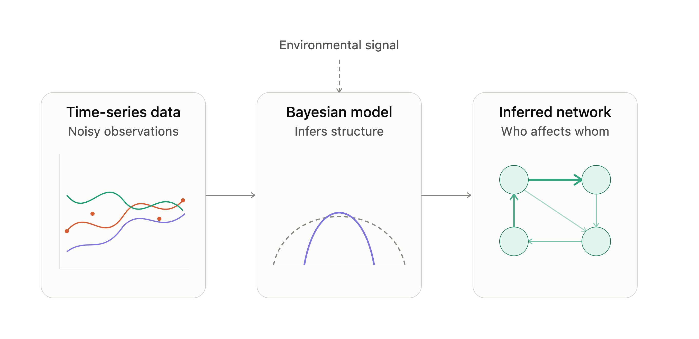
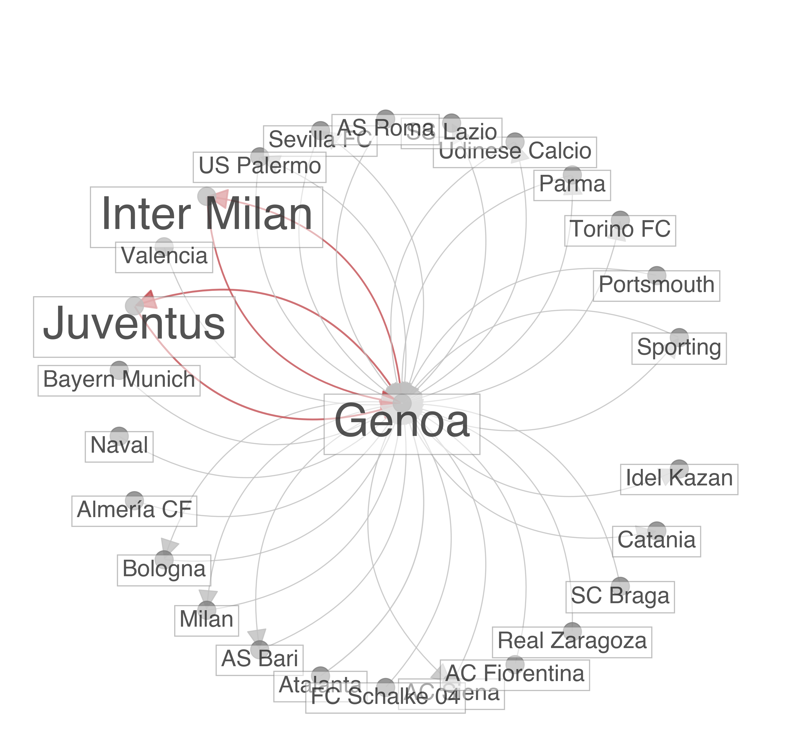
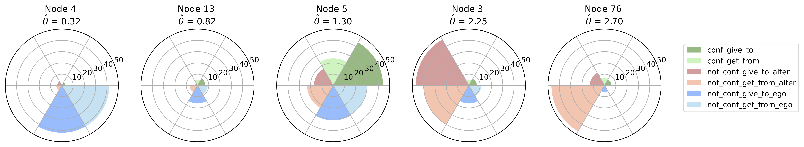
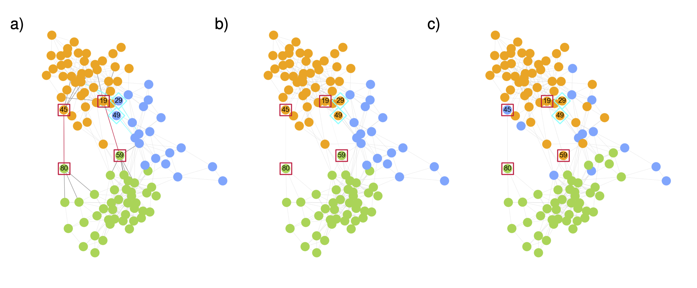
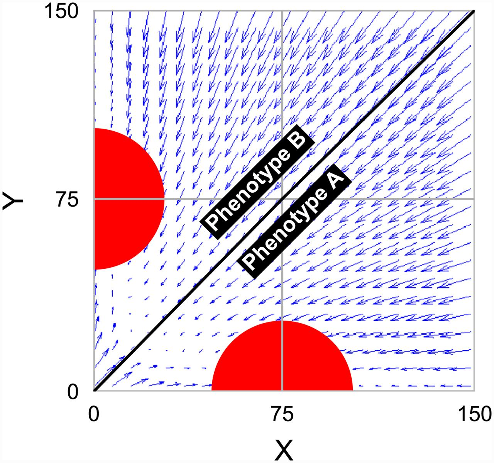
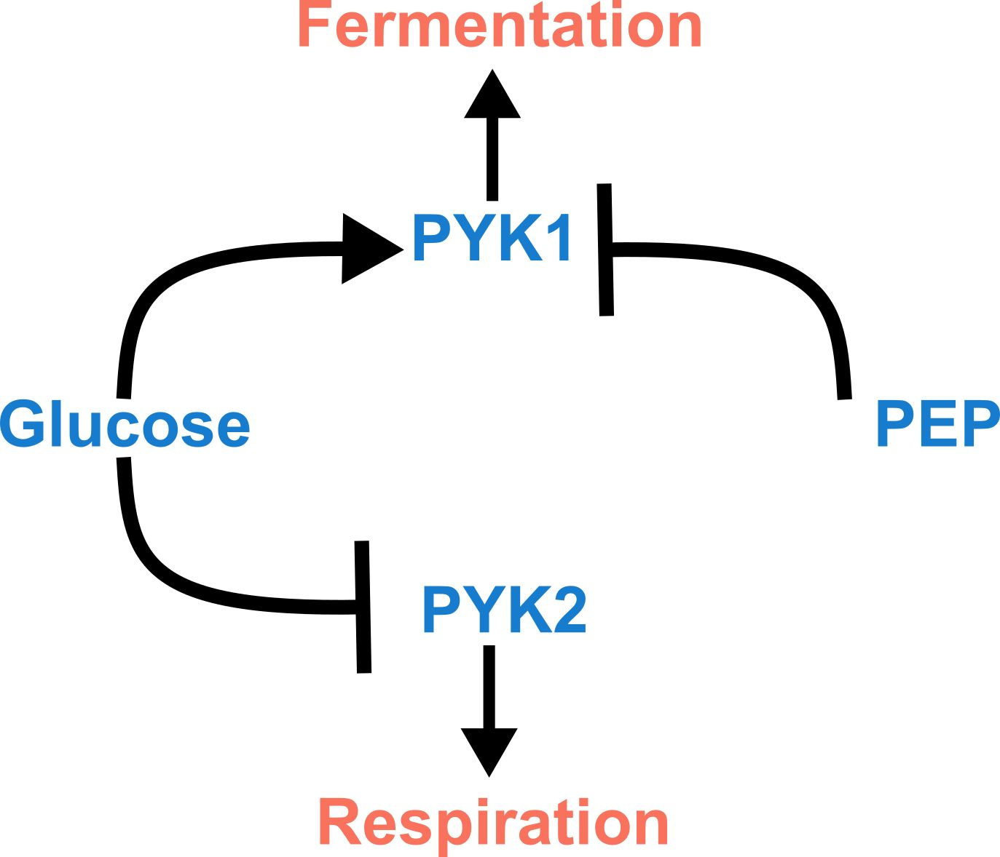

GitHub
GitHub
Network structure
Community structure, reciprocity, anomalous edges, and relational data whose organization changes over time.

profile.jpg with your own photograph to show your portrait here.
Interdisciplinary physicist
Probabilistic models for complex, noisy, relational, and evolving systems.
I am an interdisciplinary physicist fascinated by the hidden order within complex systems. My work sits at the crossroads of statistical physics, probabilistic modeling, and machine learning, where I build generative models to make sense of the intricate webs of interaction that shape real-world systems — from the social networks that connect us to the living ecosystems that surround us.
At the heart of my research is a simple question: what invisible structures and mechanisms govern the systems we observe? Real data is rarely clean or static. It evolves over time, carries the biases of the people who report it, hides subtle dependencies between observations, and responds to a changing environment. My models are built to embrace this messiness rather than assume it away. I have developed methods that detect anomalies in evolving networks by learning what "normal" looks like, that capture the interplay between reciprocity and community structure in directed networks, and that recover reliable social networks from noisy, conflicting self-reports. More recently, I have been extending this philosophy from networks to dynamical biological systems, inferring the interactions that drive microbial communities as they change through time. Grounded in Bayesian inference and designed for interpretability, these tools don't just fit data — they explain it.
Much of my favorite work has emerged from collaborations with economists, statisticians, biologists, and social scientists. These partnerships are among the most rewarding parts of my research life: they challenge me to translate theoretical and computational ideas into answers for questions with genuine real-world impact.
Research profile
Community structure, reciprocity, anomalous edges, and relational data whose organization changes over time.
Models that account for missing data, measurement noise, reporting bias, and conflicting observations.
Inference for biological time series, especially microbial systems shaped by interactions and environmental context.
Selected projects and publications
These projects share a common goal: using probabilistic generative models to recover interpretable structure from data that are noisy, biased, incomplete, or evolving.
Microbial communities are dense webs of interaction: species compete, cooperate, and reshape one another's fortunes as their environment shifts. But the data we collect on them is noisy, sparse, and shaped by the limits of what our instruments can measure.
In this ongoing project, I am developing a Bayesian framework to infer how microbial species influence one another over time — and how those relationships respond to changing environmental conditions — directly from absolute-abundance time-series measurements. The approach is designed to handle the practical realities of such data, from measurement noise to detection limits, while keeping the inferred interactions interpretable and grounded in biological priors. The broader aim is to turn imperfect observational data into a principled, mechanistic picture of how a microbial ecosystem behaves. Manuscript in preparation.

Networks evolve, and so does what counts as "unusual" within them. DynACD is a probabilistic model that learns the community structure underlying a dynamic network and flags interactions that deviate from that learned baseline — turning anomaly detection into a principled statistical inference problem rather than a heuristic one.
Beyond outperforming existing methods on synthetic and real-world benchmarks, the model's probabilistic framework makes its results interpretable: applied to two decades of player transfers among European football clubs, it revealed anomalies shaped by club wealth and league boundaries, and even surfaced likely errors in the data itself.

If someone sends you a connection, how likely are you to send one back — and how does that tendency interact with the communities you belong to? Most models treat reciprocity and community structure separately, or assume network edges form independently.
CRep breaks with both assumptions: it is a generative model that captures their joint effect, with an efficient expectation-maximization algorithm for inference and a companion benchmark for generating synthetic networks with tunable reciprocity. The result is markedly better edge prediction and networks that reproduce the reciprocity patterns actually observed in real data. The implementation is open source.

When you ask two people about the same relationship, they often disagree. VIMuRe is a latent network model that treats survey-based social network data as what it really is — noisy, multiply-reported observations — and infers the underlying network while accounting for each reporter's tendency to over- or under-report, as well as mutuality in how ties are described.
Built on variational inference, it scales to large networks, and applications to village datasets from Nicaragua and Karnataka show substantially more accurate estimates of network structure and reciprocity than conventional approaches. This project, a collaboration with statisticians and social scientists, underscores a central theme of my work: the measurement process is part of the model.

This work presents a probabilistic generative model for anomaly detection in networks, ACD, leveraging community structure to define regular interaction patterns. The model incorporates latent variables representing community memberships and anomalous edges, enabling simultaneous inference of both.
An expectation-maximization algorithm efficiently estimates these variables, and the model's performance is validated using synthetic and real-world datasets. Experiments demonstrate improved community detection by removing or adding edges identified as anomalies, showcasing the model's flexibility and robustness. The findings suggest that understanding network community structure enhances the accuracy of anomaly detection.

This interdisciplinary project develops a noise-driven differentiation model of cell differentiation and pattern formation. The model incorporates intrinsic cellular noise, stochastic cell division, and cell signaling to explain how phenotypic diversity emerges and leads to spatiotemporal patterns in cell populations.
Simulations using a cell aggregation model support the model's predictions, showing that noise alone can generate heterogeneity, while signaling introduces spatial order. The study discusses implications for understanding the evolutionary transition from unicellularity to multicellularity.

This research uses computational modeling and game theory to investigate the Crabtree effect in yeast, focusing on the switch between fermentation and respiration for ATP production. The proposed metabolic switch model allows individual yeast cells to dynamically adjust their strategy based on glucose availability, resulting in population-level heterogeneity.
This contrasts with traditional game-theoretical models that assume distinct subpopulations with fixed strategies. The study uses stochastic simulations to explore the model's behavior under varying glucose conditions and proposes an experimental method to distinguish between mixed-strategy and distinct-subpopulation scenarios.
